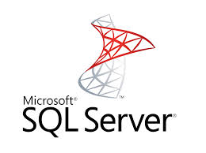

Microsoft SQL ServerAbout SQL ServerMicrosoft SQL Server is a relational database management system developed by Microsoft. As a database, it is a software product whose primary function is to store and retrieve data as requested by other software applications, be it those on the same computer or those running on another computer across a network (including the Internet). There are at least a dozen different editions of Microsoft SQL Server aimed at different audiences and for workloads ranging from small single-machine applications to large Internet-facing applications with many concurrent users. Its primary query languages are T-SQL and ANSI SQL. ArchitectureThe protocol layer implements the external interface to SQL Server. All operations that can be invoked on SQL Server are communicated to it via a Microsoft-defined format, called Tabular Data Stream (TDS). TDS is an application layer protocol, used to transfer data between a database server and a client. Initially designed and developed by Sybase Inc. for their Sybase SQL Server relational database engine in 1984, and later by Microsoft in Microsoft SQL Server, TDS packets can be encased in other physical transport dependent protocols, including TCP/IP, Named pipes, and Shared memory. Consequently, access to SQL Server is available over these protocols. In addition, the SQL Server API is also exposed over web services.  Click on the Image to view the complete Microsoft SQL Server Tutorial |